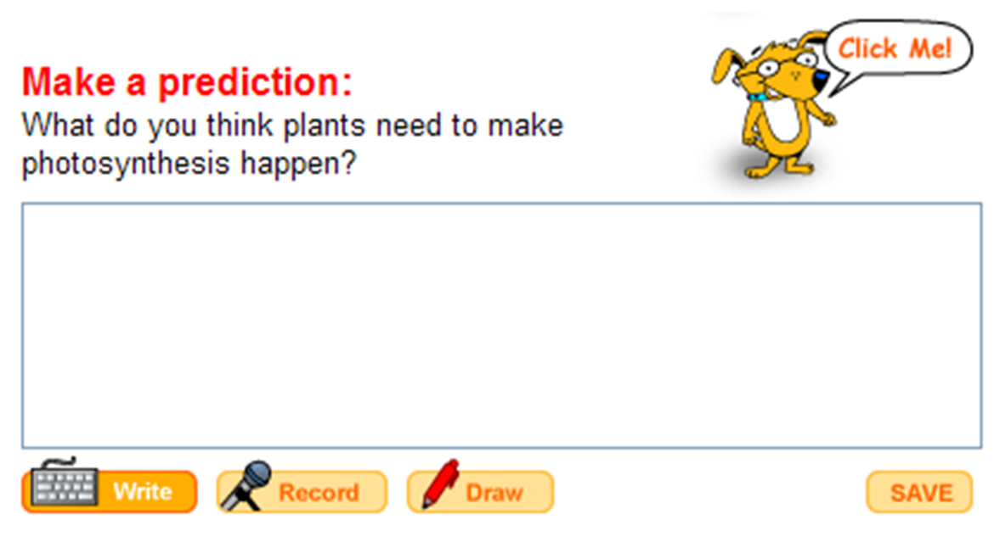

CLIPPS provides different levels for supporting students written interactions with the materials, as is the case below of having students reflect upon their understanding of what they've read by making a prediction. Scaffolds are shown in order of most supported to least supported.
1) Sentence starter + model |
|
2) Model only |
3) No supports |

|
|